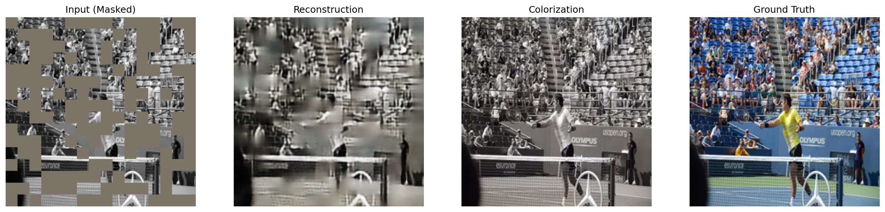

Built model
Reconstruction and Color
One frozen vision backbone, adapted with a small LoRA, feeds two heads: fill the missing image, and guess the color.
- 01 · Freeze the eyeDINOv2 ViT-S/14 stays frozen. It already knows patches.
- 02 · Adapt lightlyLoRA rank 32, plus the last transformer block. That is what fits a 4 GB card.
- 03 · Two headsA shared decoder splits into an RGB reconstruction head and a Lab color head.
- 04 · LookMasked input, reconstruction, color, and the original, side by side.
Question
- Can one backbone both repair a damaged image and color a gray one, without training two networks?
Why this path
- Full fine-tuning of the backbone does not fit the GPU. LoRA trains the difference.
- Reconstruction and color share the encoder, then split, so each head can be judged on its own.
What held
2 headsRGB repair and Lab color, one decoder
LoRA 32what actually trains
5,000COCO val images on disk
Reading the result
- Reconstruction loss is mostly L1, with a little SSIM, so the head is pushed to keep structure.
- On a held-out photo the pose and the court survive the mask. Color is learning the scene, grass and kit, and is the head that still wants a longer run.
- This pass is 2 epochs at batch size 1, with gradient accumulation. The architecture is in place. Color is the part a longer budget would move.
A real output
One validation image, saved by inference.py. Left to right: masked input, reconstruction, colorization, original.
Why it stopped here
- The card is a 4 GB RTX 3050. Rank, batch, and epoch count were chosen so a run could finish.
- The best weights,
model_BEST_smallgpu.pth, stay on this machine. The five sample images are inresults/.

Next pass. The color head is the open half. The training notes point at something like 20 epochs before that head is judged finished.